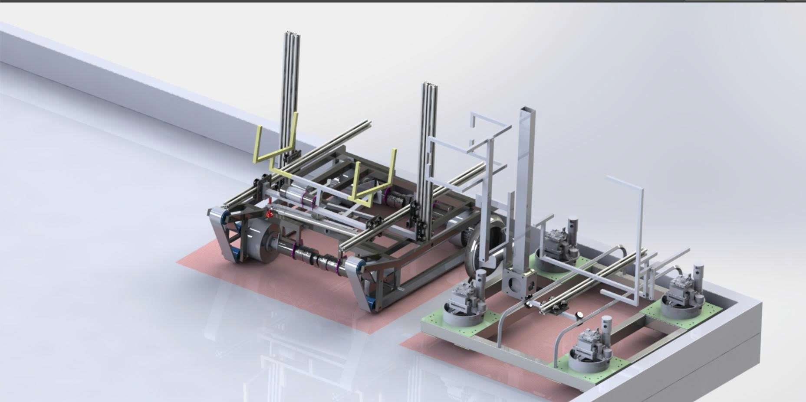
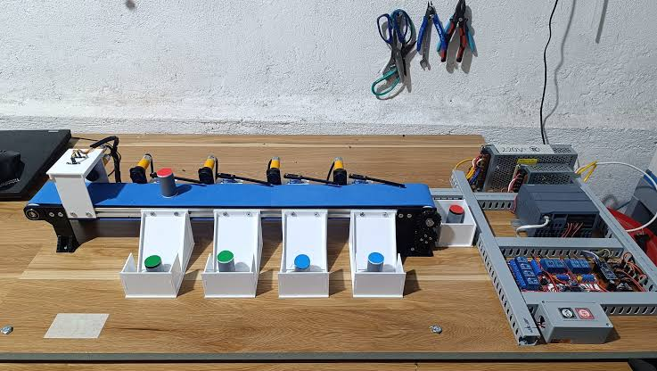
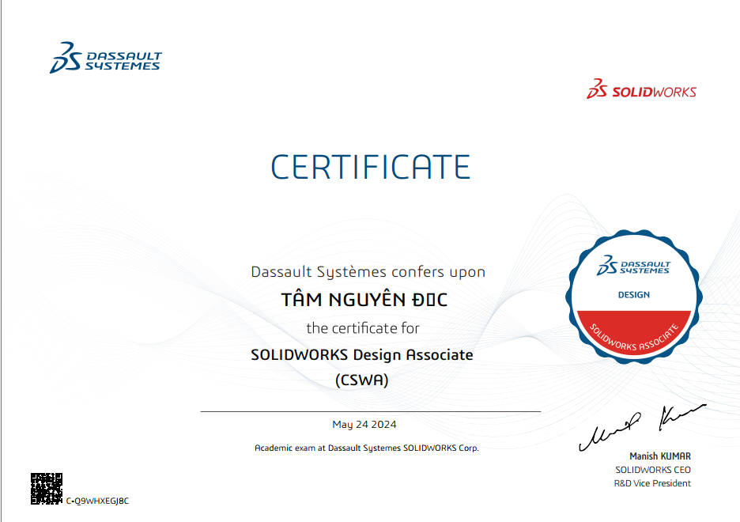

Thiết kế cơ khí 3D
Dựng chi tiết, lắp ráp cụm cơ cấu và trình bày ý tưởng bằng mô hình CAD; chú trọng kết cấu, khả năng lắp ráp và chế tạo.
SOLIDWORKS · AUTOCADXin chào! Tôi là Nguyễn Đức Tâm, sinh viên ngành Cơ Điện Điện Tử tại Đại học Lạc Hồng. Tôi quan tâm đến thiết kế cơ khí 3D bằng SolidWorks, phát triển robot Robocon và hệ thống tự động hóa. Tôi mong muốn tích lũy kinh nghiệm thực tế, học hỏi từ đội ngũ kỹ thuật và phát triển năng lực chuyên môn.
Tôi muốn phát triển năng lực từ bản vẽ kỹ thuật đến mô hình có thể vận hành — kết hợp tư duy cơ khí với điện, điều khiển và tự động hóa.
Dựng chi tiết, lắp ráp cụm cơ cấu và trình bày ý tưởng bằng mô hình CAD; chú trọng kết cấu, khả năng lắp ráp và chế tạo.
SOLIDWORKS · AUTOCADTham gia thiết kế hai robot hướng đến Robocon 2027. Nội dung sẽ được cập nhật theo quá trình thực hiện.
ROBOTICS · CADQuan tâm đến cảm biến, bộ điều khiển, băng chuyền và quy trình phân loại sản phẩm.
PLC · CONTROLKỹ năng được trình bày theo mức độ hiện tại, không phóng đại kinh nghiệm.
Thiết kế chi tiết · lắp ráp · mô hình 3D
Bản vẽ kỹ thuật 2D
Kiến thức cơ bản về điều khiển và mô phỏng
Lập trình cơ bản
Một số dự án học tập tập trung vào thiết kế cơ khí, robot và tự động hóa công nghiệp.

PROJECT / 01 · CAD CỦA TÔIThiết kế cơ khí robot hướng đến cuộc thi Robocon 2027 bằng SolidWorks, tập trung vào kết cấu khung đế, bố trí bánh xe và khả năng lắp ráp. Dự án đang trong quá trình phát triển từ mô hình CAD đến chế tạo và thử nghiệm.
Trao đổi về dự án ↗Ảnh tham khảo cuộc thi Robocon của sinh viên Lạc Hồng (không phải robot của cá nhân): Xem bài viết và ảnh gốc từ Đại học Lạc Hồng ↗.
 Ảnh thực tế Robocon LHU 2024 · ảnh tham khảo từ website trường ↗
Ảnh thực tế Robocon LHU 2024 · ảnh tham khảo từ website trường ↗
PROJECT / 02 · ẢNH THỰC TẾMô hình băng chuyền phân loại sản phẩm theo màu sắc, sử dụng cảm biến để nhận diện sản phẩm và cơ cấu khay để phân loại. Nội dung tập trung vào nguyên lý điều khiển băng tải, phân loại và thống kê số lượng sản phẩm.
Trao đổi về dự án ↗Ảnh tham khảo bổ sung về hệ thống phân loại tự động: mô hình phân loại đĩa màu tại xưởng điện tử ↗.
Chứng chỉ chuyên môn thể hiện quá trình học tập và phát triển kỹ năng thiết kế kỹ thuật.

Chứng chỉ thiết kế cơ khí với SOLIDWORKS. Theo ảnh chứng chỉ được cung cấp, ngày cấp là 24/05/2024.
Xem ảnh chứng chỉ ↗CV PDF tổng hợp thông tin học vấn, kỹ năng, chứng chỉ và thông tin liên hệ.
Mở CV PDF ↗Tải CV ↓Lời giới thiệu ngắn về định hướng nghề nghiệp và mong muốn học hỏi trong môi trường kỹ thuật chuyên nghiệp.
Kính gửi Quý Công ty / Anh Chị phụ trách tuyển dụng,
Tôi là Nguyễn Đức Tâm, sinh viên ngành Cơ Điện Điện Tử tại Trường Đại học Lạc Hồng. Tôi viết thư này để bày tỏ mong muốn được tìm hiểu các cơ hội thực tập hoặc cộng tác trong lĩnh vực thiết kế cơ khí, cơ điện tử và tự động hóa công nghiệp.
Trong quá trình học tập, tôi đã tiếp cận thiết kế 3D bằng SolidWorks, bản vẽ kỹ thuật AutoCAD và các kiến thức cơ bản về PLC, điều khiển và lập trình. Tôi đang tham gia các dự án học tập liên quan đến thiết kế robot Robocon 2027 và hệ thống băng chuyền phân loại sản phẩm. Tôi cũng có chứng chỉ SOLIDWORKS Design Associate (CSWA).
Tôi hiểu rằng mình vẫn cần tích lũy thêm kinh nghiệm thực tế. Vì vậy, tôi sẵn sàng học hỏi, làm việc có trách nhiệm, tiếp thu góp ý và phối hợp cùng đội ngũ để hoàn thành nhiệm vụ được giao.
Cảm ơn Quý Công ty đã dành thời gian xem xét hồ sơ. Tôi rất mong có cơ hội trao đổi thêm về khả năng đóng góp và học hỏi tại đơn vị.
Trân trọng,
Nguyễn Đức Tâm
ductam250505@gmail.com
Tôi luôn sẵn sàng trao đổi về cơ hội thực tập, công việc phù hợp cho sinh viên, dự án thiết kế cơ khí và các hoạt động kỹ thuật.
✉ Gửi email cho tôi ↗